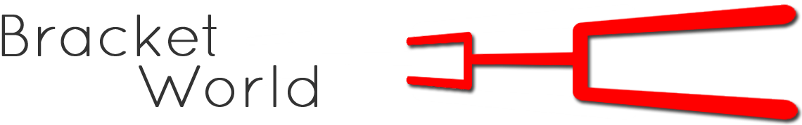

Options Documentation
teams
Between 2 and 256 (practical limit) — the number of teams in the bracket.
Default: 2
scale
Between 0 and 1 — the zoom level of the bracket,
Default: 0 (automatic zoom level based on # of teams)
scaleDelta
Between 0 and 1 — the amount of zoom change that occurs when zooming in/out.
Default: 0.25
height
Pixel height of the bracket area.
Default: '500px' (does not impact the bracket itself as the area will scroll if it does not accomodate the dimensions)
topOffset
Pixel spacing between the top of the container and the top of the bracket.
Default: 105
teamWidth
Pixel width of a team name in the bracket.
Default: 200 (recommend not changing this unless also changing the font size in the css)
teamNames
JSON array representing team names and seeds to populate on the bracket. The order of how the entries are applied are as follows (relative to a vertical representation of the bracket): top-half bracket first round, top-half bracket second round (if applicable), bottom-half bracket first round, bottom-half bracket second round (if applicable). A horizontal representation works in a similar way except the right half of the bracket is flipped so that the entries are populated from the bottom line to the top line. The images below clarify the ordering.


Default: none — Example: [{ name:'Illinois', seed:'6' }, { name:'Iowa', seed:'11' }]
horizontal
0 or 1 — determines whether to display the bracket in a horizontal (1) or vertical (0) representation.
Default: 1
rectFill
Color (hex or css — recognized string name) for the bracket's lines.
Default: '#ff0000'
bgcolor
Background color (hex or css — recognized string name) for the bracket's container.
Default: '#f2f2f2'
transition
Milliseconds or jQuery — recognized string that sets the transition speed for the
.fadeIn()/
.fadeOut()during bracket zooms/perspective changes.
Default: 'fast'
icons
True or false — whether or not to show the zoom/perspective change icons above and below the bracket area.
Default: true
API
To perform operations on the bracket after invocation, leverage the
.data("bracket")attribute that's a part of the returned jQuery object. All of the below methods can be chained.
zoomIn
Inputs:
- scale: (optional) between 0 and 1, desired end scale for the bracket
- func: (optional) callback function
Examples:
Default behavior of zooming in by scaleDelta (default: 25%):
var theBracket = $('#bracket1').bracket({teams:7, height:'590px'});
thebracket.data("bracket").zoomIn();
Defining a scale and then taking an action after the zoom completes:
var theBracket = $('#bracket1').bracket({teams:7, height:'590px'});
thebracket.data("bracket").zoomIn(0.75, function(e){alert('All Done Zooming In');});
zoomOut
Inputs:
- scale: (optional) between 0 and 1, desired end scale for the bracket
- func: (optional) callback function
Examples:
Default behavior of zooming out by scaleDelta (default: 25%):
var theBracket = $('#bracket1').bracket({teams:7, height:'590px'});
thebracket.data("bracket").zoomOut();
Defining a scale and then taking an action after the zoom completes:
var theBracket = $('#bracket1').bracket({teams:7, height:'590px'});
thebracket.data("bracket").zoomOut(0.25, function(e){alert('All Done Zooming Out');});
setVertical
Inputs:
- func: (optional) callback function
Example:
Setting the bracket to a vertical perspective and taking an action after the switch completes:
var theBracket = $('#bracket1').bracket({teams:7, height:'590px'});
thebracket.data("bracket").setVertical(function(e){alert('All Done Setting Vertical');});
setHorizontal
Inputs:
- func: (optional) callback function
Example:
Setting the bracket to a horizontal perspective and taking an action after the switch completes:
var theBracket = $('#bracket1').bracket({teams:7, height:'590px'});
thebracket.data("bracket").setHorizontal(function(e){alert('All Done Setting Horizontal');});
setTeams
Inputs:
- teamJSON: team seed and names in JSON format
To understand how these values are populated, look at your bracket in vertical orientation and the seeds/names will be added from top to bottom in the first round of the top half of the bracket followed by the second round of the top half of the bracket (if there are byes) then from top to bottom in the first round of the bottom half of the bracket followed by the second round of the bottom half of the bracket (if there are byes).
It's important to note that the right half of the bracket in a horizontal orientation will flip the team lines. This is due to the rotations and translations involved in creating the horizontal representation from the vertical.
Example:
var theBracket = $('#bracket1').bracket({teams:7, height:'590px'});
thebracket.data("bracket").setTeams( [ { name:'Texas', seed:'5' }, { name:'Kansas', seed:'4' }, { name:'Kansas State', seed:'1' }, { name:'Baylor', seed:'7' }, { name:'Texas Tech', seed:'3' }, { name:'TCU', seed:'2' }, { name:'Oklahoma State', seed:'8' } ]);
Notes
- Tested in IE9+, Chrome, Firefox, Safari
- Though not specifically coded in a responsive way, the bracket should scale nicely to different screen sizes — there is no width dependency and the area will simply scroll if the bracket's width goes outside the viewport
- Colors specific to the operation of moving matchups around to reposition bye lines can only be edited via the css (jquery.bracket-world.css)
Changes
- Version 1.0 — 02/22/2014